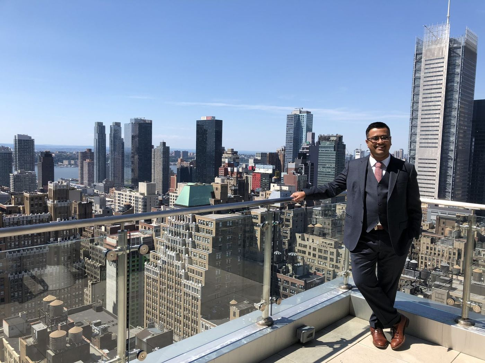

About Me
A little beyond the work
I was born in New Delhi, India in 1985 and immigrated to Cambridge, Massachusetts when I was four years old. Despite traveling almost everywhere for work, I've lived in the same five square miles of Cambridge, downtown Boston, and Brookline for 36 years.

A Transplanted Kid
My parents were from Calcutta. I grew up speaking Bengali at home. My parents refused to speak English at home, despite being fluent and lecturing in English, because they wanted me to keep my cultural roots. I spent whole summers in Calcutta as a kid, part of the Bengali and greater Indian community around Boston, keeping that identity alongside being a thoroughly American kid. Like many immigrant kids, there was always a drive to fit in, to not stand out. I lost my Indian accent by third grade. That need to blend in shaped me in ways I'm still figuring out.
Family
Science was everywhere in my household. My father did his postdoc with V.A. Najjar, was part of the Edgar Haber group at MGH, and co-founded India's National Institute of Immunology; he later held research faculty positions at Harvard and Princeton. My mother worked in science and medicine libraries at Tufts Medical School, the Whitehead Institute, Harvard Medical School, and Boston University. My older brother went into academic and biotech science before moving to the operational side of the industry. Science wasn't special in my home. It was normal.
Growing Up
Growing up was about figuring out three things about myself: I loved science and engineering, I loved leading, and I loved having impact. I built my elementary school's first website and was on our "tech team." By twelve I was on the national board of Earth Force, an environmental organization for youth, traveling to DC to lobby Congress. Our "Get Out Spoke'n" campaign helped push for pedestrian infrastructure funding in TEA-21, the Transportation Equity Act for the 21st Century. In high school: captain of the science team, state gold medals at Science Olympiad, MIT FIRST Robotics, and a collegiate underwater robotics team (run by NASA and NOAA) that took second internationally, then won, which got my team put on a billboard next to Novartis in Cambridge for a year. Wildly embarrassing. Violin from 6 to 18, third chair in youth orchestra; taught myself piano in high school.
As an Adult
From college through Advanced Peptides I got deeply into partner dance, four years of competitive ballroom, five of Argentine tango, three of salsa, plus swing and blues. Cooking became a passion I still pursue through complex, technical recipes, and I'm a taco aficionado who has sampled and rated hundreds of taco shops across the US. My friends and I are obsessed with puzzle rooms and travel to try them around the world; we competed for years in the Great Urban Race, winning the Boston regionals and placing second internationally every time. We eventually realized the only team that beat us were competitive marathon runners we simply couldn't outrun.
Now
I'm still working through what it means to be an immigrant who assimilated so thoroughly. In 2026 I started volunteering more earnestly, serving at the Brookline Food Pantry and mentoring founders and small-business owners through the Boston chapter of SCORE. When I'm not working on my next venture, I'm in the kitchen working through complex recipes, doing escape rooms and puzzles, or trying to figure out golf, all while still living in that same Cambridge radius that's always been home.